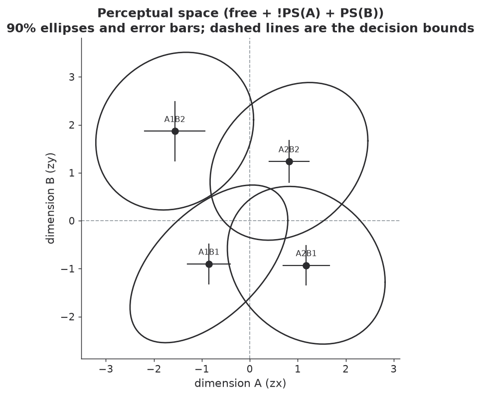
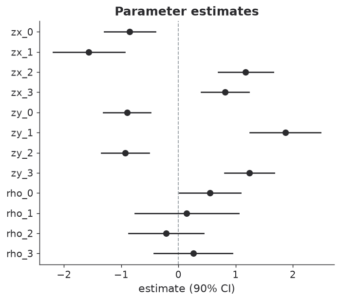
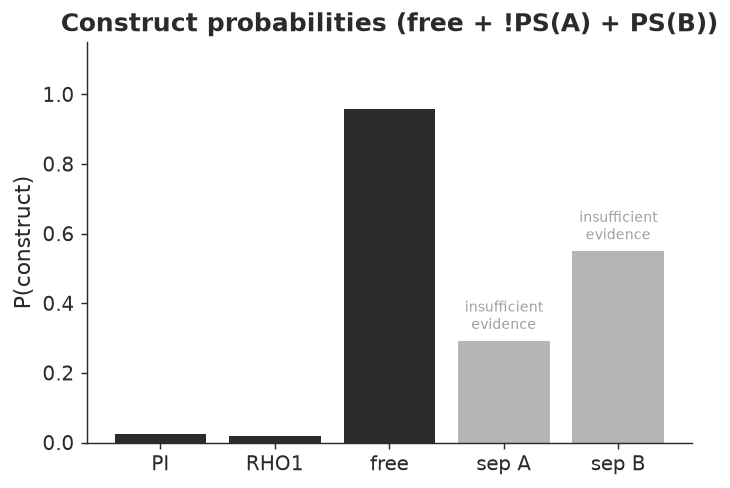
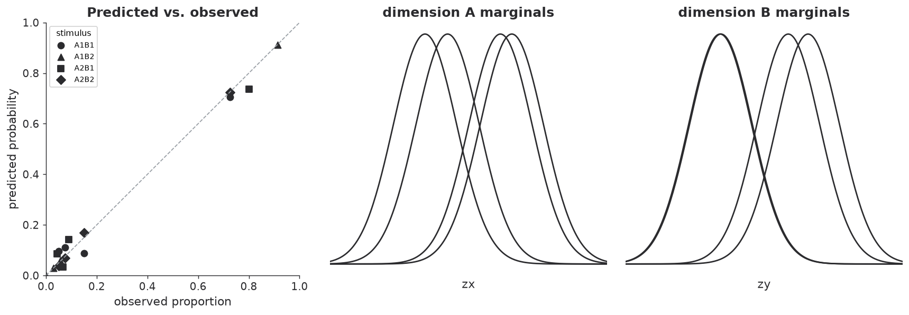

You have an identification study: each row is a trial, with the stimulus shown and the response given. This turns that into a fitted perceptual space with intervals, and into the construct probabilities a GRT analysis usually reports. Every output below is the real thing — generated by running this code on the example file.
-
Start from trial-level data
One row per trial. The only columns that matter are
stimulusandresponse; aparticipantcolumn lets you split a sample.my_experiment.csvparticipant trial stimulus response p01 1 a2/b2 a2/b1 p01 2 a2/b1 a2/b1 p01 3 a2/b2 a2/b2 p01 4 a1/b2 a1/b2 p01 5 a2/b2 a1/b1 p01 6 a2/b2 a2/b2Levels are written as
a1/b2— the level on each dimension, separated by a character you choose. Order carries meaning that a bare label cannot express, so the packages will not guess it: you say which levels belong to which factor and they do the placement.import pandas as pd, grintools as gt trials = pd.read_csv("my_experiment.csv") one = trials[trials.participant == "p01"] ci = gt.to_confusion( one, long=True, factor_a=("a1", "a2"), factor_b=("b1", "b2"), sep="/", ) print(ci.counts)library(grin) trials <- read.csv("my_experiment.csv") one <- trials[trials$participant == "p01", ] ci <- grin_to_confusion( one, factor_a = c("a1", "a2"), factor_b = c("b1", "b2"), sep = "/" ) print(ci$counts)counts, canonical order[[29 2 3 6] [ 1 32 0 2] [ 2 3 36 4] [ 2 6 3 29]]
Rows are stimuli and columns responses, both ordered
A1B1, A1B2, A2B1, A2B2. If your file already has a 4×4 matrix in that order, skip this step and pass it straight in. -
Fit it
One call, well under a millisecond.
fit, con = gt.infer(ci.counts) print(fit.summary())fit <- grin_infer(ci$counts) print(fit)consoleGRIN inference (onnx) ---------------------------------------------- zx_0 = -0.85 +/- 0.27 [90% -1.30, -0.41] zx_1 = -1.57 +/- 0.38 [90% -2.19, -0.94] zx_2 = +1.18 +/- 0.29 [90% +0.69, +1.66] zx_3 = +0.82 +/- 0.25 [90% +0.40, +1.23] zy_0 = -0.90 +/- 0.25 [90% -1.31, -0.48] zy_1 = +1.87 +/- 0.37 [90% +1.25, +2.49] zy_2 = -0.93 +/- 0.25 [90% -1.34, -0.51] zy_3 = +1.24 +/- 0.26 [90% +0.80, +1.67] rho_0 = +0.55 +/- 0.32 [90% +0.02, +1.09] rho_1 = +0.14 +/- 0.55 [90% -0.76, +1.05] rho_2 = -0.21 +/- 0.40 [90% -0.87, +0.44] rho_3 = +0.26 +/- 0.42 [90% -0.43, +0.95] ---------------------------------------------- most likely structure : free + !PS(A) + PS(B) intervals are the network's own; pass calibrated=True for width-corrected intervals (see the package documentation)
Note
rho_0: the interval runs past 1.0. The point estimate of a correlation is always valid, but the shipped interval is a symmetric Gaussian one in parameter space and is not clipped to (−1, 1). Read such an interval as “everything up to the boundary”. -
Read the constructs
for k, ek in (("p_PI", "evidence_PI"), ("p_sep_A", "evidence_sep_A"), ("p_sep_B", "evidence_sep_B")): print(k, con[k], con[ek])con <- fit$constructs con$p_PI; con$evidence_PI con$p_sep_A; con$evidence_sep_A con$p_sep_B; con$evidence_sep_Bconsolep_PI 0.024 evidence: True p_sep_A 0.292 evidence: False p_sep_B 0.550 evidence: False
The
evidenceflag is the useful part. Here independence is clearly rejected, but neither separability call is far enough from one half to report as a finding — which is the honest answer, not a failure. -
Report it
The perceptual space is the conventional way to present a GRT result. All four plots come straight off the fitted object and default to a greyscale-safe style.
from grintools.plot import (plot_space, plot_params, plot_constructs, plot_diagnostics) plot_space(fit)res <- fit$result grin_plot_space(res)plot_space(fit)
plot_params(fit)grin_plot_params(res)plot_params(fit)
plot_constructs(fit, con)grin_plot_constructs(res, con)plot_constructs(fit, con)
plot_diagnostics(fit, ci.counts)grin_plot_diagnostics(res, ci$counts)plot_diagnostics(fit, cm)
Read the diagnostics plot carefully. A poor reconstruction is a real warning, but a good one does not validate the GRT assumptions: the unconstrained model can reproduce any pattern of response proportions, so fitting well is not evidence that the model is right.
-
Do the whole sample
for pid, sub in trials.groupby("participant"): c = gt.to_confusion(sub, long=True, factor_a=("a1", "a2"), factor_b=("b1", "b2"), sep="/") _, cc = gt.infer(c.counts) print(pid, cc["p_PI"], cc["p_sep_A"])for (pid in unique(trials$participant)) { sub <- trials[trials$participant == pid, ] c <- grin_to_confusion(sub, factor_a = c("a1","a2"), factor_b = c("b1","b2"), sep = "/") f <- grin_infer(c$counts) cat(pid, f$constructs$p_PI, f$constructs$p_sep_A, "\n") }consolep01 p_PI = 0.024 p_sep_A = 0.292 p02 p_PI = 0.006 p_sep_A = 0.831 p03 p_PI = 0.059 p_sep_A = 0.831
In R,
grin_tidy()returns one row per parameter per person, and the_groupplotting functions take a list of fitted objects. -
Know what the intervals mean
The interval on a marginal sensitivity means what it says. The interval on a within-stimulus correlation is narrower than nominal — across large held-out sets a 90% interval covers about 84% of the time. Both packages ship an optional correction, off by default:
fit, con = gt.infer(ci.counts, calibrated=True) fit.std # corrected widths fit.std_raw # what the network returnedfit <- grin_infer(ci$counts, calibrated = TRUE) fit$result$std # corrected widths fit$result$std_raw # what the network returnedPoint estimates, construct probabilities and model selection are identical either way — only the stated uncertainty changes.
Next: stop when the estimate is precise enough, or set stimulus levels.